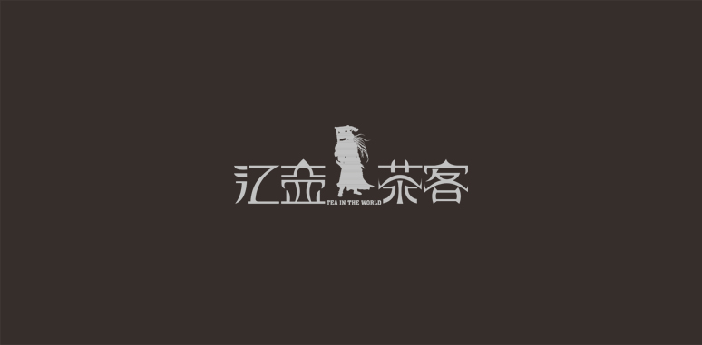
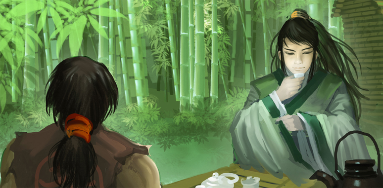
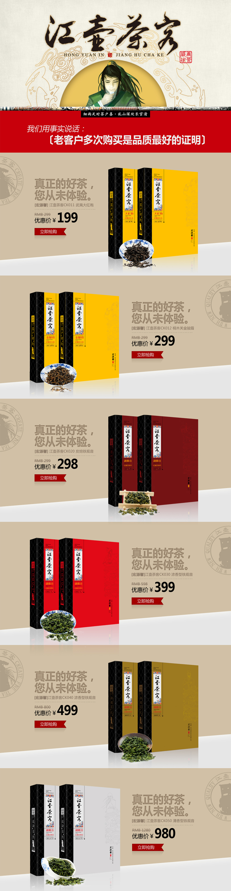
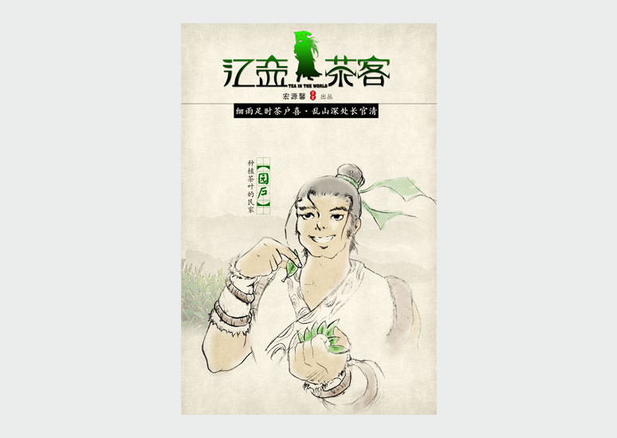
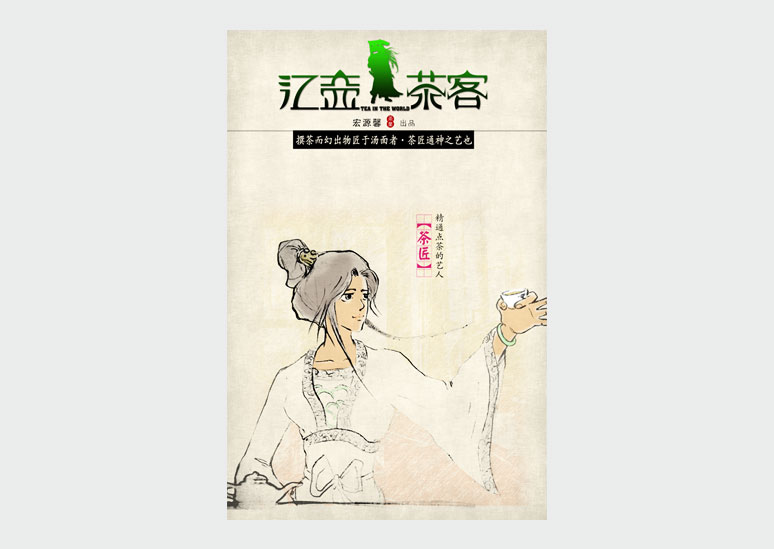

公司背景
江壶茶客是一个模拟建立在线上的全新高端茶叶品牌。在淘宝天天低价促销，除了活动就是让利的电商时代，高价段始终无法形成一种
消费习惯。而我司建立在客户和市场的需求下，根据庞大的数据分析和市场调研总结出一套打破了高价段无法发展的发展模式...
茶食品包装规划设计
我们从茶叶高消费人群的特点中确定出品牌的发展方向，抓住“寻访茶说，茶道人生”的生活态度和信仰，建立了这个放纵不羁的品牌豪迈的情怀。
这是一个年轻的品牌，也是一个以文化故事做核心的茶叶品牌，不管是包装上细腻的勾勒还是网页详情里浅言淡写的描绘，这个品牌这个系列的元
素慢慢的成为了这个迈向高端消费的网商时代品牌代表之一。
服务内容
1、江壶茶客品牌和市场定位
2、江壶茶客所有茶品包装开发
3、江壶茶客品牌及故事塑造
4、用户体验系统开发
5、CRM客户维护系统开发
    